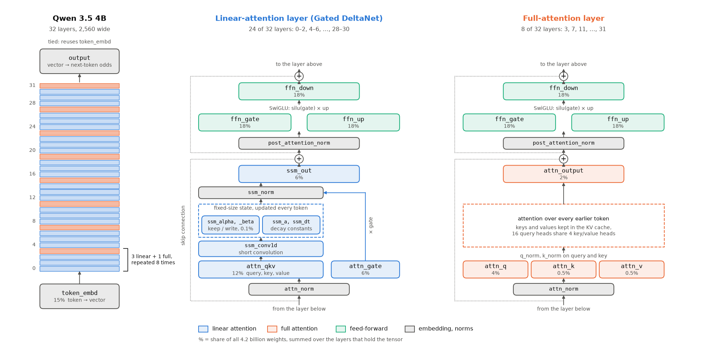

How the model files were made
This guide describes how every model file in this study was produced: the structure of the models, what quantization does to each part of them, how the formats and recipes differ, what an imatrix is and why one can be moved between files. It assumes some familiarity with neural networks and none with quantization. The results are in the reports: Phase 1, Phase 2, Phase 3 and the follow-ups.
Scope: Qwen models only
Every measurement here comes from three Qwen models: Qwen 3.5 4B, Qwen 3.5 9B and Qwen 3.8 27B. They were chosen because they are among the most popular open models for self-hosting, and their quantized versions are what people actually run on consumer graphics cards with llama.cpp and the tools built on it.
The general mechanisms below (rounding, block scales, imatrix weighting) work the same way for any model llama.cpp supports. The specific findings may not carry over. Qwen 3.5 uses a hybrid layer design that most other model families don't share, and the recipe results in the follow-up (which tensors deserve extra bits) are tied to that design. How many digits of π a model has memorized, and how sure it is of each, depends on its training too.
Inside the models
Layers
Qwen 3.5 4B and 9B are both stacks of 32 layers. Text enters as tokens, each token is looked up in an embedding table to become a vector (2,560 numbers wide on the 4B, 4,096 on the 9B), and that vector passes through every layer in turn. At the end it is compared against the vocabulary to give a probability for each possible next token.
Each layer has two halves:
- A token mixer, which lets each position read information from earlier positions. Qwen 3.5 uses two kinds:
- Full attention (every 4th layer, 8 of the 32). Each position compares itself with every earlier one and pulls in what's relevant, which costs memory that grows with the length of the text (the KV cache). The 4B uses 16 query heads sharing 4 key/value heads.
- Linear attention, specifically Gated DeltaNet (the other 24 layers). Instead of looking back at every earlier position, it keeps a fixed-size running state and updates it at each token, deciding how much of the old state to keep and how strongly to write the new token in. It's much cheaper on long texts. llama.cpp files its tensors under
ssm_*names, after the state-space models it resembles.
- A feed-forward network that transforms each position on its own (a SwiGLU block of three matrices).
Small normalization steps sit between the parts and keep the numbers in a stable range.

token_embd, pass the 32 layers and leave through output, which on the 4B reuses the embedding table, while the bars show the fixed pattern of three linear-attention layers (blue) and one full-attention layer (orange). The two panels open up one layer of each kind. Each box is a tensor, coloured by its part and labelled with its share of the model's weights. Dotted lines are skip connections. Each half adds its result to the running vector at the + circles. Both kinds of layer end in the same feed-forward block, and it holds over half of all the weights.Tensors
Each of those pieces is stored as one or more named weight matrices, or tensors, under the names llama.cpp uses in the files and in the per-tensor overrides further down. The shares are for the 4B, which has 4.2 billion weights in all.
| Tensor | Part | Layers | Share of weights | What it does |
|---|---|---|---|---|
ffn_gate, ffn_up, ffn_down | feed-forward | all 32 | 54% | the three SwiGLU matrices |
token_embd | embedding | once | 15% | token → vector, and on the 4B also vector → token at the output |
attn_qkv | linear attention | 24 | 12% | one fused projection producing the query, key and value |
attn_gate | linear attention | 24 | 6% | gate on the layer's output |
ssm_out | linear attention | 24 | 6% | projects the layer's result back into the main vector |
attn_q, attn_k, attn_v, attn_output | full attention | 8 | 7% | the classic attention projections |
ssm_alpha, ssm_beta | linear attention | 24 | 0.1% | per-token decay (how much state to keep) and write strength |
ssm_conv1d, ssm_a, ssm_dt, all *_norm | various | various | under 0.1% | short convolution, state constants, normalization |
The 4B uses the same table for input and output ("tied embeddings"). The 9B keeps a separate output matrix. The 27B (Qwen 3.8) follows the same design at larger size and also ships one extra layer for predicting several tokens at once (blk.64), which llama.cpp doesn't use.
The tiny tensors in the last row stay at 32-bit precision in every file. Everything else is a candidate for quantization.
Quantization
Rounding to fewer bits
The released model stores each weight as a 16-bit number (BF16): 8.4 GB for the 4B and 54.7 GB for the 27B. Quantization stores each weight in fewer bits by rounding it to one of a small set of levels. At 4 bits there are 16 levels, and the file shrinks to roughly a quarter.
Every rounded weight is slightly wrong. One error is negligible, but each token passes through billions of multiply-adds, and the errors shift the model's output probabilities a little. That doesn't matter when the right next token is far ahead. It matters when two candidates are nearly tied, which is exactly the case this study probes with digits of π.
Blocks and scales
The levels aren't fixed for a whole tensor. Weights are cut into blocks of 32, and each block stores its own scale (and in some formats an offset) at higher precision. A block of small weights gets finely spaced levels, a block with an outlier gets coarser ones. The K-quants group blocks into super-blocks of 256 and compress the block scales too, which buys accuracy at the same size. The scales take space, so a "4-bit" format costs about 4.5 bits per weight.
Formats
All files are GGUF, the format llama.cpp reads.
| Name | What it means |
|---|---|
| BF16 | The original weights, unrounded. |
| Q8_0 | 8-bit levels in blocks of 32, one scale per block, about 8.5 bits per weight. In this study it gave the same answers as BF16. |
| Q4_0 | The older ("legacy") 4-bit format, one scale per block of 32. |
| Q6_K, Q5_K, Q4_K, Q3_K, Q2_K | K-quant formats at roughly 6 to 2 bits per weight. |
| Q4_K_M, Q3_K_M, … | A file-level preset. _S, _M, _L, _XL name how many tensors get raised above the base K-quant. A Q4_K_M file mixes Q4_K and Q6_K tensors (see below). |
| IQ4_XS, IQ3_XXS, IQ2_XS, IQ2_XXS | I-quants. Weights are encoded in groups against a lookup table of good patterns, which beats K-quants at the same size. They decode slowly on the SYCL backend used here. |
Bits per weight (bpw) in the reports is measured, not read off the name: file size × 8 ÷ number of weights. That includes the scales and the tensors kept at higher precision, so a 4B Q4_K_M measures 5.15 bpw.
Recipes
A file-level name like Q4_K_M is really a recipe: a type for every tensor. llama.cpp's built-in recipes raise the precision of tensors known to be sensitive, and anyone can override any tensor by name. Here is what three files of the 4B actually contain, read from the files themselves:
| Tensor | Standard Q4_K_M | unsloth Q4_K_M | Standard Q2_K |
|---|---|---|---|
ffn_gate, ffn_up | Q4_K | Q4_K | Q2_K |
ffn_down | half Q6_K, half Q4_K | half Q6_K, half Q4_K | Q3_K |
token_embd | Q6_K | Q6_K | Q6_K |
attn_qkv (linear) | half Q6_K, half Q4_K | Q5_K | Q4_K |
attn_gate (linear) | Q4_K | Q4_K | Q2_K |
ssm_out (linear) | Q4_K | Q5_K | Q2_K |
ssm_alpha, ssm_beta (linear) | Q4_K | Q8_0 | Q2_K |
attn_q, attn_k, attn_output (full) | Q4_K | Q4_K | Q2_K–Q3_K |
attn_v (full) | half Q6_K, half Q4_K | 5 of 8 Q6_K | Q4_K |
The standard recipe was written for ordinary attention layers and treats Qwen 3.5's linear-attention tensors by the same rules. unsloth's recipe gives them more bits, for a file only 30 MiB larger. The follow-up report tests each of those changes on its own.
The imatrix
What it records
Within a weight matrix the input channels don't all carry the same signal, and on real text some are large while others sit near zero almost all the time. A rounding error on a weight that multiplies a large input does far more damage than one on a weight whose input is usually quiet.
An imatrix (importance matrix) measures this. llama.cpp runs the full-precision model over a calibration text and, for every weight matrix, accumulates the average squared activation of each input channel. The result is one vector per matrix: 248 of them for the 4B, in a 3.6 MB file.
What it changes
When the quantizer picks each block's scale, it normally minimizes the plain squared rounding error, treating every weight alike. With an imatrix it minimizes the error weighted by input importance, accepting larger errors where inputs are quiet in exchange for smaller ones where they are loud. File size, formats and recipe stay exactly the same, and only the choice of levels changes. The smallest I-quants can't be built at all without one.
The calibration text sets the priorities
An imatrix protects whatever its calibration text exercises. If the text has no digits, the channels that light up on digits look unimportant and get no protection. My imatrix was built that way on purpose, from Wikipedia text with every number removed, to test whether an imatrix tuned on ordinary prose protects memorized digits. It doesn't (H4 in the Phase 1 report).
Why an imatrix can be moved between files
An imatrix is a property of the full-precision model and the calibration text, stored per tensor name, with nothing in it about formats or recipes. One imatrix therefore serves every quantized file of the same model: mine built Q4_K_M_imat, Q2_K_imat and IQ3_XXS alike.
For the same reason, an imatrix made by someone else can be used, provided it comes from the same model with the same tensor names and shapes. unsloth publishes theirs. That made it possible to build files that combine the standard recipe with their imatrix, or their recipe with my imatrix, and so separate what each ingredient contributes.
It doesn't carry across models. The 9B's tensors have different shapes from the 4B's, and a fine-tuned model's activations have moved enough to need a fresh imatrix.
The files in this study
Each model has one reference that everything is compared against: BF16 for the 4B and 9B, and unsloth's Q8_0 for the 27B, whose BF16 doesn't fit on two 24 GB cards.
| Group | Example names | How it was made |
|---|---|---|
| Plain ladder (my builds, no imatrix) | Q8_0, Q6_K, Q5_K_M, Q4_K_M, Q3_K_M, Q2_K | llama.cpp's built-in recipe and nothing else. Only the bit width changes from step to step. |
| My imatrix | Q4_K_M_imat, Q3_K_M_imat, Q2_K_imat, IQ4_XS, IQ3_XXS, IQ2_XS | Built-in recipe, rounded with my number-free imatrix. |
| unsloth's imatrix | Q4_K_M_usimat, Q3_K_M_usimat | Built-in recipe, rounded with unsloth's published imatrix. |
| unsloth's files | us_Q4_K_M, us_UD-Q4_K_XL, … | Downloaded as published. UD- ("Unsloth Dynamic") files use unsloth's own per-tensor recipe. |
| Legacy | Q4_0, us_Q4_0 | The older 4-bit format, for comparison with K-quants. |
| Recipe experiments (4B follow-up) | Q4_K_M_usimat_ssmout, Q4_K_M_usrecipe_usimat, Q2_K_imat_ssm, … | My builds with chosen tensors overridden, or with every tensor's type copied from an unsloth file. |
How my own files were built
All builds used llama.cpp at commit bed0a8566, and each one takes two or three steps.
1. Source. Every DIY file was quantized from unsloth's BF16 GGUF of the model. For the 27B, which can't be loaded on this hardware, the BF16 file was only read from disk while quantizing.
2. Imatrix (only for _imat builds). The calibration text is the training split of WikiText-2, a standard Wikipedia corpus. scripts/make_inputs.py keeps the first 600,000 characters of lines with no run of three or more digits and no decimal number, and asserts that no stretch of π, e or √2 survives. Its SHA-256 is in data/calibration.sha256. Then:
llama-imatrix -m <reference>.gguf -f data/calibration.txt -o imatrix.gguf --chunks 200 -c 512
That's 200 windows of 512 tokens, about 100,000 tokens. The imatrix was computed on BF16 for the 4B and 9B and on Q8_0 for the 27B. Q8_0 is close enough to BF16 that the importance values barely move.
3. Quantize.
llama-quantize [--imatrix imatrix.gguf] [--tensor-type-file recipe.types] <BF16>.gguf out.gguf Q4_K_M
The last argument picks the preset and its built-in recipe. --imatrix adds weighted rounding. --tensor-type-file overrides chosen tensors, one line each, such as ^blk\.3\.ssm_out\.weight$=q5_k. The settings for every version live in config.yaml, and scripts/pipeline.py runs the commands.
Copying a recipe from a published file
A GGUF file records the type of every tensor it contains, so a published recipe can be read straight out of the file. recipe_overrides() in scripts/pipeline.py opens unsloth's file with llama.cpp's own GGUF reader and writes one override line per quantized tensor. Fed to llama-quantize together with unsloth's imatrix, it rebuilt their Q4_K_M and UD-Q2_K_XL exactly. The rebuilt files recite π identically, get the same digits wrong under teacher forcing, and match the published files' noise.
Checking the pipeline
My Q8_0 of the 4B and unsloth's Q8_0 sit at the same noise (KL divergence) from BF16, 0.000133 and 0.000131. The pipeline adds no error of its own. Differences between files at lower bit widths come from how they were quantized.
Where to look
| What | Where |
|---|---|
| Every version, its source, preset, imatrix and overrides | config.yaml |
| The calibration text | scripts/make_inputs.py (make_calibration) |
| Download, imatrix, quantize and recipe copying | scripts/pipeline.py (imatrix_file, ensure_file, recipe_overrides) |
| Test plan and the comparisons the builds were designed for | PLAN.md |
| Results | REPORT.md, REPORT_9B.md, REPORT_27B.md, REPORT_FOLLOWUP.md |